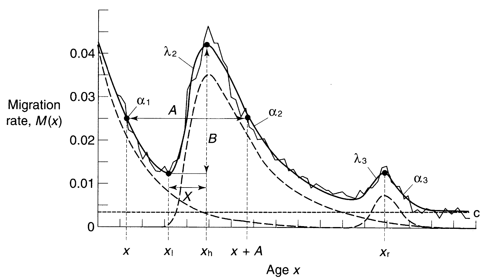

人口学勉強会購読資料(9, 10章)
9 人口動態事象における年齢パターンをモデリングする
これまでは年齢をいくつかのかたまり（5歳刻みなど）でまとめてきたが、それは各年齢内の同質性を仮定している。非集約化は人口動態事象を正確に表現することが必要だけれども、結果は煩雑となる。年齢による人口動態事象の年齢パターンをモデリングすることは4つの目的と対応している。
標準的なパターンを表すモデルと実際のデータとを比較することで、実際のデータの特異性を特定することができる。
6章でおこなった人口投影のタスクを単純化できる。年齢固有の出生率や死亡率などにたいする個別の仮定を用意する代わりに、モデルの年齢パターンを用いることで、はるかに少ない仮定のもと年齢固有率を算出できる。
モデルパターンを通して比較的少ないパラメータの値を求め、人口学的パラメータを間接的に推定できる。
多くの人口に共通する経験的な規則性を発見することで、そのばらつきの規定要因などについての洞察が得られるようになる。
年齢パターンのモデリングは(1) 年齢のばらつきをリスクとして定式化することで要約する、(2) 平均余命のような指標を年齢固有率の全表を提示する、(3) 1および2の組み合わせの3つのバリエーションがある。
9.1 死亡の年齢パターンのモデル
9.1.1 数学的表現
古典的に死亡の年齢パターンとして死亡率の対数が年齢と線形な関係にあることが知られている(ゴンペルツ曲線)。 \[ \mu (x) = \alpha \cdot e^{\beta x} \tag{9.1} \]
\[ In [\mu (x)] = In(\alpha) \beta x \tag{ns1}\label{eq:ns1} \]
ただし \(\ref{eq:ns1}\) 式は偶然的・感染的原因による死亡のみに当てはまる。定数項をくわえて年齢とは独立して作用する死亡原因を考慮する。
\[ \mu (x) = \alpha \cdot e^{\beta x} + \gamma \tag{ns2}\label{eq:ns2} \]
\(\ref{eq:ns2}\) 式は80歳以上では死亡率を課題に推計する可能性がある。そこで、ロジスティックモデルを推定して最高齢層の死亡率をあらわす。
\[ \mu (x) = \frac{\beta \gamma^x}{1 + \beta \gamma^x} \tag{ns3} \]
死亡率の推定に使うと、\(\mu (x)\)のロジットが年齢の線形の関数であることがわかる。
\[ 1 - \mu (x) = \frac{1}{1 + \beta \gamma^x} \tag{ns4} \]
\[ \frac{\mu (x)}{1 - \mu (x)} = \beta \gamma^x \tag{ns5} \]
他方で若年層では年齢とともに死亡率は減る。幼児死亡率は内生的要素と事故や感染にもとづく外生的要素に分解できる。\(n\)は年齢を、\(\ref{eq:ns6}\) 式の第一項は内生的要素を、第二項は外生的要素を示す。
\[ q(n) = a + b [In (n + 1)]^3 \tag{ns6}\label{eq:ns6} \]
最終的に全年齢の死亡をモデリングするには8つのパラメータが必要となる。第一項(\(A\)、\(B\)、\(C\)、ただし\(C < 0\))は若年期の死亡率を、第二項は青年期に見られる’accudent hump’を、第三項は高齢期のロジスティック式を表す(厳密には若年期・青年期・高齢期の定数項がそれぞれ必要ではないだろうか)。
\[ \frac{{}_1 q_x}{{}_1 p_x} = A^{(x+B)^C} + D e^{- E (In (x) - In (F))^2} + GH^x \tag{ns7}\label{eq:ns7} \]
\(\ref{eq:ns7}\) 式のような普遍的なモデルは内生的な死亡にのみ当てはまり、人口によってばらつく特定の疾患については考慮できていない点に留意が必要。
9.1.2 表による表現
表による表現では出生時の平均余命といった任意の死亡水準についての一般的な生命表関数をあらわす’モデル生命表’の形をとる。今日ではCoale and Demenyが1966年に作成したモデル生命表が使われる(けれども、現代的な統計のスタンダードとしては不十分)。地域と\(e^o_{10}\)の値にもとづくモデル生命表は二重のエントリーシステムにもとづいている。
作成手続きは以下の通り。(1) 国勢調査の年齢で記録された人口と死亡の組み合わせに基づいて、男女326人づつの実際の死亡スケジュールを収集する。(2) それぞれの年齢での\({}_n q_x\) をランクづけし、暫定的なモデル生命表を作成する。(3) そのモデル生命表と実際の生命表を比較し、その差異を年齢の関数として表現する。(4) 残りの192の表から地理的に分類される4つのクラスタ(東西南北)を析出する。
いくつか注意点がある。単一の年齢別死亡率から選択される生命表は、地域モデルの選択に非常に敏感であるため、死亡の年齢パターンについての独立した情報を必要とする1。モデル生命表は\(e^o_{10}\)の推計から\({}_n q_x\)を推計するが、幼児死亡率から任意の年齢区間の死亡率を最もよく推定できる保証はない。実際のデータに含まれていない最高(最低)の死亡率レベルについては、パフォーマンスが良くない。因子分析を用いると死亡の一般的なレベル、幼少期から青年期までの死亡、極端な年齢の死亡の3つの要素から90％のばらつきを説明できる。
モデル生命表の限界は、先進国の実証データにもとづいて作成されているにもかかわらず、発展途上国にモデルを適用している点にある。
9.1.3 関係モデル
関係モデルは、表形式で表現された「基準」死亡関数と、その関数をあらゆる集団の死亡率に関係づけるための数学的規則からなる。死亡の年齢パターンの複雑さを基準からとらえ、モデルパラメータから基準との偏差を捉える。結果的に、数学的に導出された死亡関数よりも少ないパラメータでモデリングできる利点を持つ。
最初のモデルは\(q(x)\) (\(x\)歳の前に死亡する確率)のロジット変換にもとづく。
\[ logit [q(x)] - \frac{1}{2} In \left[ \frac{q(x)}{1 - q(x)} \right] \tag{ns8} \]
\(q(x)\) のロジット (\(Y(x)\))の予測値が求められれば、\(Y(x)\)を逆変換して\(x\)歳の前に死亡する予測確率を求められる。
\[ \hat{q}(x) = \frac{exp(2\hat{Y} (x))}{1 + exp(2\hat{Y} (x))} \tag{ns9} \]
同じように、生まれてから\(x\)歳まで生存する確率は\(1 - \hat{q}(x) = \hat{p}(x)\)である。
\[ \hat{p}(x) = 1 - \hat{q} (x) = \frac{1}{1 + exp(2\hat{Y} (x))} \tag{9.2} \]
最終的に、\(Y(x)\)を標準的な人口\(Y^S(x)\)について予測する関係モデルは\(\ref{eq:9.3}\) 式のようになる。\(\alpha\)は死亡’レベル’(切片)を示す。\(\alpha\)が大きくなると\(Y(x)\)は全年齢で増加し\(p(x)\)は全年齢で減少する。\(\alpha\)が大きいと死亡率が高い。\(\beta\)は死亡関数の’傾き’である。\(\beta\)が大きくなると\(Y(x)\)は\(Y^S(x)\)が正の年齢では増加し、負の年齢では減少する。
\[ \hat{Y}(x) = \alpha + \beta \cdot Y^S (x) \tag{9.3}\label{eq:9.3} \]
\(\ref{eq:9.3}\) 式はあらゆる標準として使えるため、特定の文脈下ではより適切なモデルがあるかもしれない。関係モデルがうまく機能するかどうかは関心となる人口のために選択された基準の適切さ、そして基準における死亡が同じ類型に属するほかの人口とどのように関係しているかを特定するルールの適切さで決まる。
Ewbank, Gomez de Leon and Stoto (1983) は、もとのロジット変換に\(\kappa\)と\(\lambda\)という2つのパラメータを追加した。\(\kappa\)と\(\lambda\)が0に近づくほど古典的なロジット変換に近づく。
\[ T^S (x) = \frac{\left( \frac{p^S (x)}{1 - p^S (x)} \right) - 1}{2 \kappa} \text{when } p^S (x) \geq 0.5 \tag{ns10} \]
\[ T^S (x) = \frac{\left(1 - \frac{1 - p^S (x)}{p^S (x)} \right)^{\lambda}}{2 \lambda} \text{when } p^S (x) < 0.5 \tag{ns11} \]
9.2 結婚の年齢パターン
結婚の年齢パターンを記述するうえでは関係的アプローチが最も有用。一方で結婚可能性および結婚年齢は人口によるばらつきが大きい2。他方で、これまでに結婚した女性の結婚割合は彼女ら自身の結婚年齢の平均と標準偏差に比してとても類似している(?)。
CoaleとMcNeilは、婚姻率基準から、結婚年齢別に結婚した女性の分布の密度関数\(G(a)\)(\(a\)歳での既婚割合)を導き出す関係モデルを提案した。\(a_0\)は結婚が始まる年齢(人口の1％が結婚している年齢)を、\(\kappa\)は女性がどれだけ速く結婚するかの指標を、\(C\)は最終的に結婚した割合の標準化因子をそれぞれ示している。
\[ G(a) = C \cdot G^S \left( \frac{a - a_0}{\kappa} \right) \tag{9.4} \]
初婚の標準的な密度は以下の形態を取る(らしい)3。\(\ref{eq:9.5}\) 式を通じて、\(G(a)\)の表化された値が得られる。
\[ g_S (x) = 0.19465 \text{ exp} \{ -0.174 (x - 6.06) - \text{exp} [-0.288 (x - 6.06)] \} \tag{9.5}\label{eq:9.5} \]
平均初婚年齢は\(a_0\)と\(\kappa\)の関数として、初婚年齢の分散は\(\kappa\)だけの関数として求められる(それぞれ\(\ref{eq:ns12}\) 式、\(\ref{eq:ns13}\) 式)。
\[ \mu = \int^\infty_0 a G(a) da = \alpha_0 + 11.36 \kappa \tag{ns12}\label{eq:ns12} \]
\[ \sigma^2 = \int^\infty_0 (a - \mu)^2 G(a) da = + 43.34 \kappa^2 \tag{ns13}\label{eq:ns13} \]
\(\ref{eq:ns12}\) 式、\(\ref{eq:ns13}\) 式からもわかるように、関係モデルは結婚年齢の平均と分散という観点からも再定式化できる。結果的に、結婚年齢の平均と分散が分かればモデルにフィットできる。
\(\ref{eq:9.5}\) 式の二重の指数項は指数がほぼ等差数列(隣接する各項の差が等しい数列)である正規曲線と3つの指数の畳み込みの近似としても考えられる。3つの指数項は、結婚プロセスのさまざまな段階における待ち時間の分布を表していると考えられ、それぞれのリスクは一定である。例えば、第1項は結婚可能になってから最終的な配偶者と出会うまでの時間、第2項は出会ってから婚約するまでの時間、第3項は婚約してから結婚するまでの時間を表すかもしれない。
9.3 出生の年齢パターン
結婚は出産の重要なプロセスであるため、婚姻の年齢パターンに結婚から妊娠の間の待機時間と妊娠時間を単純にくわえた初産の年齢分布を導出すれば良い。しかし、4つの指数項を持つ年齢パターンと3つの指数項を持つ年齢パターンとを区別することができなかったので、不完全に終わった。
より成功した試みは婚姻の関係モデルと2つの基準にもとづく結婚出生率(marital fertility)の組み合わせで出生スケジュールの関係モデルを導き出すもの。ここで\(r(a)\)は年齢固有の結婚出生率を、\(G(a)\)は\(a\)歳での結婚割合をそれぞれ示す。
\[ f(a) = G(a) \cdot r(a) \tag{ns14} \]
出産抑制が故意におこなわれない自然出生の研究にもとづいて、CoaleとTrussellは\(a\)歳での結婚出生率の割合を\(r(a)\)として\(\ref{eq:9.6}\) 式に示した。\(n(a)\)は自然出生スケジュール下での\(a\)歳での有子割合、\(v(a)\)は自然出生スケジュールとは区別される年齢パターンを、\(m\)は自然出生スケジュールからの乖離の程度を、\(M\)は年齢パターンに基づかない結婚出生率のレベルをそれぞれ示す。
\[ r(a) = M \cdot n(a) \cdot e^{m \cdot v(a)} \tag{9.6}\label{eq:9.6} \]
実際のスケジュールは\(m\)と\(M\)を推定することで予測する。この2つを推定するもっとも簡単な方法として、OLSのような線形推定が挙げられる。\(\ref{eq:ns15}\) 式は\(\ref{eq:9.6}\) 式の対数変換である。\(\ref{eq:ns15}\) 式はなんらかの出生コントロールが行われているかどうかを検出するために用いられることがある。より複雑なデータがあればイベントヒストリー分析やコホート・パリティ分析を用いることもできる。
\[ In \left( \frac{r(a)}{n(a)} \right) = In(M) + m \cdot v(a) \tag{ns15}\label{eq:ns15} \]
\(x\)歳での出生率の変換である\(Y(x)\)は\(x\)歳での出生率基準の変換と線形に関連する。
\[ Y(x) = \alpha + \beta \cdot Y^S (x) \tag{ns16} \]
\(Y(x)\)をロジットで示すという見地では、二重の対数で変換する方が望ましい。\(f(x)\)は\(x\)歳での累積出生率の比を示す。\(Y(x)\)が\(\alpha\)に近くなる点で\(Y^S\)が24歳で0に近づくという出生率基準を設定することが推奨されている。
\[ Y(x) = In (- In [f(x)]) \tag{ns17} \]
結婚出生率という見地からは年齢パターンだけでなく結婚期間のモデルも重要となる。Pageは\(a\)歳での出生率、結婚期間\(d\)、時間\(t\)を時間—年効果、年齢効果、期間効果の積として表現した。\(R(a)\)は自然出生スケジュール\(r(a)\)で近似でき、\(D(d)\)は指数関数\(\text{exp}(-\sigma d)\)の形をとる。\(L(t)\)は年次レベルの出生率を、\(\sigma\)結婚中の出生率の急速な低下をそれぞれ示している。
\[ r(a, d, t) = L(t) R(a) D(d) \tag{ns18} \]
時間の参照軸を落とすと、CoaleとTrussellの\(M\)と\(m\)からも表現できる(\(\ref{eq:9.6}\) 式と\(\ref{eq:ns15}\) 式を参照)。
\[ r(a, d) = L n(a) exp [-\sigma d] \tag{ns19}\label{eq:ns19} \]
年齢固有の結婚出生率は年齢および結婚期間固有の出生率の重み付け平均となる。\(W^L (a, d)\)は\(a\)歳に\(d\)年結婚している女性の数を示している。
\[ r(a) = \frac{\int^a_0 W^L (a, d) r(a, d) dd}{\int^a_0 W^L (a, d) dd} \tag{ns20}\label{eq:ns20} \]
\(\ref{eq:ns19}\) 式を\(\ref{eq:ns20}\) 式に代入。
\[ r(a) = L n(a) \frac{\int^a_0 W^L (a, d) e^{-\sigma d} dd}{\int^a_0 W^L (a, d) dd} \tag{9.7} \]
平均値の定理により分子の積分は\(\ref{eq:ns22}\) 式としても表現できる。\(d^{\star} (a)\)は0から\(a\)年の期間。
\[ exp [-\sigma d^{\star} (a)] \cdot \int^a_0 W^L (a, d) dd \tag{ns22}\label{eq:ns22} \]
最終的に結婚期間を考慮した出生率は\(\ref{eq:9.8}\) 式となる。\(\ref{eq:9.8}\) 式から見て取れるように、\(-v(a)\)は\(a\)歳の女性の初婚からの’平均’期間の割合として解釈できる。
\[ r(a) = L n(a) exp [-\sigma d^{\star} (a)] \tag{9.8}\label{eq:9.8} \]
9.4 移動の年齢パターン
移動も進学や転職、引退で起こると考えると年齢パターンが存在する。移動は青年期に最も多く生起し、わずかに引退期にも生起する。RogerとCastroは移動モデルにたいして11個のパラメータを提起した。\(\alpha_1\)は就労以前の下降率、\(\lambda_2\)は就労中の上昇率、\(\alpha_2\)は就労中の下降率、\(\lambda_3\)は引退後の上昇率、\(\alpha_3\)は引退後の下降率、\(x_l\)は最も低いポイント、\(x_h\)は最も高いポイント、\(x_r\)は引退での最も高いポイント、\(x\)は労働力んおいフォウ、\(A\)は親の移動、\(B\)はジャンプ、\(c\)は定数項をそれぞれ示している。

出所）Rogers and Castro(1981: 6)
移動パターンを式で表すと以下のようになる。第一項は幼少期の移動率を、第二項は青年期の移動率を、第三項は引退期の移動率をそれぞれ示している。
\[\begin{eqnarray} m(x) &= a_1 \text{ exp} (\alpha_1 x) + a_2 \text{ exp} \{-\alpha_2 (x - \mu_2) \text{exp} [-\lambda_2 (x - \mu_2)]\} \\ &+ a_3 \text{ exp} \{-\alpha_3 (x - \mu_3) \text{exp} [-\lambda_3 (x - \mu_3)]\} +c \tag{ns23} \end{eqnarray}\]
コメント
モデリングをする際の理論セットという意味でとても勉強になった。現実的には理論セットをそのまま適用するのではなく、理論セットと現実データのズレを踏まえて現実を理解する、というアプローチは重要であると考えた。
超恥ずかしいのですが、畳み込み(convolution)ってなんでしたっけ・・・複数の関数の積を取る、くらいにしか理解してません。
10 データクオリティを評価する方法
信頼に足る人口学的推計をするうえでは高クオリティのデータを用いるか誤差を検出し修正することが求められる。この点で誤差評価は重要な役割を果たす。誤差には人々やイベントの網羅性を示すカバレッジ誤差とデータに記録された情報の正確さを示すコンテント誤差がある。さらに、誤差を同定するアプローチもマッチング(統計学)と人口学の2つに分けられる。
| 誤差のタイプ | アプローチのタイプ | |
| マッチング(統計学) | 人口学 | |
| カバレッジ | 1 | 2 |
| コンテント | 3 | 4 |
10.1 カバレッジ誤差を同定する統計学的手法
Table 1 のセル1はデータソースの完全性をあるデータを別のデータとマッチングさせることで推定することを目指している。この手続きは二重記録システムと呼ばれる。
具体的な手続きを確認する。ある期間に登録システムに記録された出産を、同じ期間に出産した女性に質問した調査からの回顧的な報告と比較し、Table 2 の結果が得られたとする。ここから20の報告が漏れていたこと(B)、空のセル\(D\)は\(\frac{A}{B} = \frac{C}{D} \text{ then } D = \frac{C}{A} \cdot B = \frac{50}{100} \cdot 20 = 10\)であることがわかる。最終的に、登録の完全性は\(\frac{100}{120} = 0.8333\)であることが見て取れる。
| 調査での回答 | ||
| 出産した | 出産していない | |
| 登録している | 100 (A) | 50 (C) |
| 登録していない | 20 (B) | (D) |
二重記録システムはあるデータソースにおける欠落確率と別のデータソースのそれとの相関がないことを仮定しているが、その仮定は現実的ではなく、むしろ相関がある(相関バイアス)。さらに、マッチが’正しい’ことを同定する難しさ、同じ時間と空間を比較していないことによる’out-of-scope’バイアスなどの問題により、マッチングはほとんど使われなくなった。
10.2 コンテント誤差を同定する統計学的手法
調査の中身にも誤差が含まれる。最たる例は年齢である。1985年または1980年に死亡したアフリカ系アメリカ人の高齢者の死亡時年齢は過小に報告されていた。人種分類においてもヒスパニックの位置付けなどで誤差が生じる。
10.3 データクオリティを評価する人口学的手法
10.3.1 一貫性の検証
バランス方程式がすべて真値を測定しているとき、2回の国勢調査による総人口の変化は\(\ref{eq:10.1}\) 式となる。データを使って真の値を推定したときにバランス方程式が成り立たなければ、結果として生じる「閉鎖の誤差」は、少なくともどちらかが誤った、あるいは互換性のないデータであることを示している。
\[ \Delta N = B - D + I - O \tag{10.1}\label{eq:10.1} \]
最初の国勢調査において生存しているコホートの人口変化を適用して一貫性を検証することもある。
\[ \Delta N_c = - D_c + I_c - O_c \tag{10.2}\label{eq:10.2} \]
\(\ref{eq:10.2}\) 式は応用的に\(t\)から\(t+y\)時点の死亡登録の一貫性を評価するためにも使われる。\(R_c\)は実祖k酢荒れた人口と期待人口との比を、\(N_c(t)\)は\(t\)時点でのコホートサイズ、\(D_c\)はコホートの国勢調査間の死亡数、\(I_c\)はコホートの国勢調査間の流入数、\(O_c\)はコホートの国勢調査間の流出数をそれぞれ示している。\(R_c\)が1から乖離するほどカバレッジ誤差もしくはコンテント誤差が大きいことを示している。一般的に先進国では\(R_c\)は高年齢で大きくなる(年齢の誤記が多くなるため)。
\[ R_c = \frac{N_c (t + y)}{N_c (t) - D_c + I_c - O_c} \tag{10.3} \]
一貫性の検証を正確さの検証に変換するためには、(1) 1つ(以上)のデータをより信頼できるものとして「特権化」する方法と、(2) モデルを立ててそのパラメータを解く方法がある。以下それぞれ解説する。
10.3.2 1つ(以上)の推定値を特権化するデータ評価
米国国勢調査では’人口学的分析’と呼ばれる、国勢調査ではないデータから得られた正しい出生数、死亡数、流出入数が既知という仮定にもとづく戦略を採用している。これらの推定値を国勢調査の情報と比較してカバレッジ誤差を推定する。あるコホートにおける真値は\(\ref{eq:10.4}\) 式で表される。この手法はアフリカ系アメリカ人の推定には役に立つが、不法移民などでは未だ不確実性が大きい。
\[ \hat{N}_c = B_c - D_c + I_c - O_c \tag{10.4}\label{eq:10.4} \]
’世代消滅法’は人口学的分析と考えを同じくするが、コホートの死亡を最低年齢からではなく最高年齢から数える方法。\(x\)歳時点のコホートサイズを、そのコホートが消滅するまでに発生したすべての死亡を数えることによって\(\ref{eq:10.5}\) 式のように推定する。\(D^{\star} (x + a, t + a)\)は\(t+a\)時点の\(x+a\)歳での記録された死亡数を示す(このように、世代消滅法は死亡登録を特権化する)。この方法はとくに高齢期の死亡を推定するために役立つ。
\[ \hat{N} (x, t) = \int^{\infty}_0 D^{\star} (x + a, t + a) da \tag{10.5}\label{eq:10.5} \]
variable-r方程式を用いることでコホートではなく年次の死亡人口を推定できる。\(r^{\star} (a, t)\)によって年次死亡推定を修正する。もし人口がstationaryであれば、\(\ref{eq:10.6}\) 式は\(\ref{eq:10.5}\) 式と同じになる。\(\ref{eq:10.6}\) 式は人口数よりも死亡登録の完全性を評価するために用いられる。
\[ \hat{N} (y, t) = \int^{\infty}_0 D^{\star} (x, t) e^{\int^x_y r^{\star} (a, t) da} dx \tag{10.6}\label{eq:10.6} \]
10.3.3 モデルを課してデータを評価・修正する
10.3.3.1 死亡登録の完全性の推定のためのBrass法
ある閉鎖人口について、\(\ref{eq:ns24}\) 式を考える。\(r\)、\(b\)、\(d\)はそれぞれ任意の年次における成長、出生、死亡を示している。
\[ r = b - d \tag{ns24}\label{eq:ns24} \]
\(\ref{eq:ns24}\) 式は\(x\)歳以上の人口にも当てはまる。\(b(x+)\)は\(x\)歳での出生率、すなわち1年間に\(x\)歳に到達人が\(x\)歳以上の総人口に占める割合を指している。
\[ r(x+) = b(x+) - d(x+) \tag{ns25} \]
\[ b(x+) = r(x+) + d(x+) \tag{10.7}\label{eq:10.7} \]
\(b(x+)\)は\(\ref{eq:10.8}\) 式として実際のデータからも推定できる。
\[ b^{\star} (x, t) = \frac{N(x, t)}{N(x+, t)} = \frac{\frac{1}{10} ({}_5 N_{x-5} (t) + {}_5 N_{x} (t))}{\Sigma^{\text{max}}_{a=x, 5}{}_5 N_a (t)} \tag{10.8}\label{eq:10.8} \]
(1)人口が定常である、(2)死亡登録が完全であるという仮定のもとで報告された死亡と真の死亡の比(\(\ref{eq:ns26}\) 式における\(R\))は年齢で一定となり、\(x\)歳以上での真の死亡率は\(\ref{eq:ns26}\) 式となる。\(d^{\star} (x+)\)は\(x\)歳以上での報告された死亡数を示す。
\[ d(x+) = \frac{d^{\star} (x+)}{R} \tag{ns26}\label{eq:ns26} \]
\(\ref{eq:ns26}\) 式を\(\ref{eq:10.7}\) 式に当てはめて\(\ref{eq:10.9}\) 式を得る。
\[ b^{\star} (x+) = r + \frac{1}{R} \cdot [d^{\star} (x+)] \tag{10.9}\label{eq:10.9} \]
仮定が正しければ、\(\ref{eq:10.9}\) 式はすべての年齢について成立し、\(d^{\star} (x+)\)にたいする\(b^{\star} (x+)\)のプロットは直線に沿うはずだが、現実には高年齢の部分や大きな変化が起こった場合ずれる。最終的に\(R\)の推定値は過小に報告されるだろう。
10.3.3.2 国勢調査間の生存から死亡登録の完全性を推定する方法
人口の定常性の仮定なしに死亡登録の完全性を推定する方法もある。2回目の国勢調査におけるコホートサイズを、1回目の国勢調査における同じコホートのサイズおよび死亡数に関連付ける。\(N_c(1)\)、\(N_c(2)\)はそれぞれあるコホートの1回目および2回目の国勢調査のサイズを、\(D_c\)は国勢調査間でのコホートで発生した死亡数をそれぞれ示している。ここでは国勢調査間の相対的な完全性は年齢で一定と仮定している。
\[ N_c(2) = N_c(1) - D_c(1) \tag{10.10}\label{eq:10.10} \]
1回目と2回目での真のコホーとサイズと報告されたコホートサイズの関係は\(\ref{eq:ns27}\) 式、\(\ref{eq:ns28}\) 式で示される。\(E(1)\)、\(E(2)\)はそれぞれ1回目と2回目の国勢調査の数え上げenumerationを示している。
\[ N_c (1)^{\star} = N_c (1) \cdot E(1) \tag{ns27}\label{eq:ns27} \]
\[ N_c (2)^{\star} = N_c (2) \cdot E(2) \tag{ns28}\label{eq:ns28} \]
同様に、真の死亡数と報告された死亡数の関係は\(\ref{eq:ns29}\) 式で示される。\(R\)は国勢調査間の死亡登録の完全性を示す。
\[ D^{\star}_c = D_c \cdot R \tag{ns29}\label{eq:ns29} \]
\(\ref{eq:10.10}\) 式に代入して\(\ref{eq:10.11}\) 式を得る。
\[ \frac{N^{\star}_c (1)}{E (1)} = \frac{N^{\star}_c (2)}{E(2)} + \frac{D^{\star}_c}{R} \tag{ns30} \]
\[ \frac{N^{\star}_c (1)}{N^{\star}_c (2)} = \frac{E(1)}{E(2)} + \frac{E(1)}{R} + \frac{D^{\star}_c}{N^{\star}_c (2)} \tag{10.11}\label{eq:10.11} \]
\(\frac{E(1)}{E(2)}\)および\(\frac{E(1)}{R}\)は\(\frac{N^{\star}_c (1)}{N^{\star}_c (2)}\)とという観測された値を用いたほかのコホートへの線形回帰で推定できる。最終的に得られた\(\frac{E(1)}{E(2)}\)は2つの国勢調査の相対的な網羅性を、\(\frac{E(1)}{R}\)は1回目の国勢調査と比較した死亡登録の網羅性をそれぞれ示している。
この方法はあくまでも最初の国勢調査との相対性を推定している。これは死亡推定にはおよそ問題ではないが、年齢の過大報告には敏感である。
10.3.3.3 モデル生命表システムを用いた高齢期の死亡率の推定
特定のモデル生命表を用いて死亡率のレベルを解くことで、誤記された死亡率にを修正できる。(1)任意の年齢以上の粗死亡率が真値である、国勢調査間の誤答割合が同じという仮定のもと、誤記がない一貫性の検証に用いることのできる最高年齢\(Y\)を同定し、高年齢のモデル生命表システムを用いて\(Y\)歳以上の死亡率をもとめる。
\[ DR_y = \frac{\int^{\infty}_Y N(a) \mu (a) da}{\int^{\infty}_Y N(a) da} \tag{10.12}\label{eq:10.12} \]
\(Y\)歳以上では\(N(a)\)は歪んでいると考えられるので、variable-rを用いた年齢分布方程式をに置き換える。
\[ N(a) = N(Y) e^{\int^a_Y r(x) dx}\frac{p(a)}{p(Y)} \tag{ns31}\label{eq:ns31} \]
最終的に\(\ref{eq:10.13}\) 式を得る。\(r(x)\)は\(x\)歳での報告された成長率、\(d(a)\)は\(a\)歳でのモデル生命表での死亡、\(p(a)\)はモデル生命表での生存者数をそれぞれ示している。\(\ref{eq:10.13}\) 式は報告された年齢別成長率および\(Y\)歳以上の粗死亡率と一致するモデル生命表を選択するために使用される。モデル生命表システムの中で平均余命が延びると、右辺の値は左辺の粗死亡率の観測値と等しくなるまで減少する。
\[ DR_y = \frac{\int^{\infty}_Y e^{\int^a_Y r(x) dx} p(a) \mu (a) da}{\int^{\infty}_Y e^{\int^a_Y r(x) dx } p(a) da} = \frac{\int^{\infty}_Y e^{\int^a_Y r(x) dx} d(a) da}{\int^{\infty}_Y e^{\int^a_Y r(x) dx } p(a) da} \tag{10.13}\label{eq:10.13} \]
10.3.3.4 3つ以上の国勢調査を用いる
APCモデルを用いてコホートの真のサイズを推定する方法もある。この方法では国勢調査に初登場した時点でのコホートの真のサイズを推定し、その後初登場時の人口から国勢調査間の死亡数を減じ、純移動数をくわえることによって、コホートのサイズを再構築する。年齢固有の誤差が時代で一定、時代固有の誤差が年齢で一定という仮定のもと、報告された数と真値を\(\ref{eq:10.14}\) 式のように関連づける。\(C_{it}\)は\(t\)時点の国勢調査でコホート\(i\)に報告された人数を、\(X_{it}\)は\(t\)時点の国勢調査でコホート\(i\)の真の人数を、\(\alpha_a\)は\(a\)歳での国勢調査のカバレッジの網羅性を、\(\tau_t\)は\(t\)時点での国勢調査のカバレッジの網羅性を、\(\epsilon_{it}\)は年齢、時代、コホートで条件付けると平均0になる残差をそれぞれ示している。
\[ C_{it} = \alpha_a \tau_t X_{it} + \epsilon_{it} \tag{10.14}\label{eq:10.14} \]
最初のコホートのサイズの推定値を真値\(\gamma_i\)と最初から\(t\)時点までの累積死亡数および純流出数\(D_{it}\)と関連づけるために、\(\ref{eq:10.14}\) 式の誤差項を最小化する\(\ref{eq:10.15}\) 式を得る。
\[ Min \Sigma_i \Sigma_t (C_{it} - \alpha_a \tau_t (\gamma_i - D_{it}))^2 \tag{10.15}\label{eq:10.15} \]
この方法は死亡登録が正確であるという仮定にもとづいているが、出生登録が正確である仮定は必要ではない。このほか複数回の国勢調査を用いる方法としてLuther and Retherford(1988)の方法なども挙げられる。
コメント
- 一般的に国勢調査の方が社会調査データより信頼性があると思っていたのだが、発展途上国ではそうではない、というのはすこし意外だった。